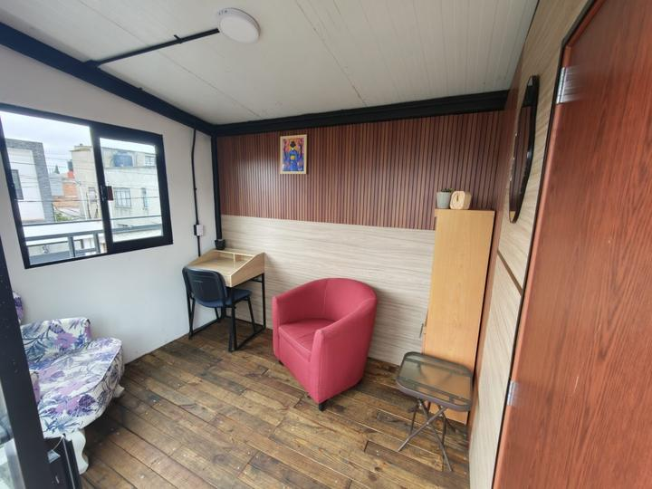

Canvas Origen · 5 m²
Todo proyecto necesita un lugar donde empezar.
El espacio más pequeño de Canvas: íntimo e independiente, pensado para trabajar, conversar o darle forma a tus primeras ideas.
Un espacio para tus primeros pasos
Un lugar de escala íntima cuando lo importante es concentrarte, conversar o comenzar.
- Trabajo individual
- Reuniones pequeñas
- Conversaciones privadas
- Primeras sesiones
- Desarrollo de ideas
Conoce Canvas Origen
Imágenes reales para conocer la distribución y el ambiente del espacio.
Mira el espacio en acción.
Un recorrido para apreciar la escala real de Origen, su distribución y la relación del interior con Canvas Deck.
Explorar todas las fotografías →Tarifas de Canvas Origen
Reserva el tiempo que necesites para empezar. Las condiciones de uso continuo se acuerdan al consultar.
* Consulta condiciones del esquema continuo, disponibilidad y vigencia de las tarifas.
¿Qué quieres empezar aquí?
Cuéntanos qué estás construyendo, cuántas personas usarían el espacio y qué horario tienes en mente.
Preguntar por Canvas Origen¿Necesitas un espacio un poco más amplio? Descubre Canvas Pulso.